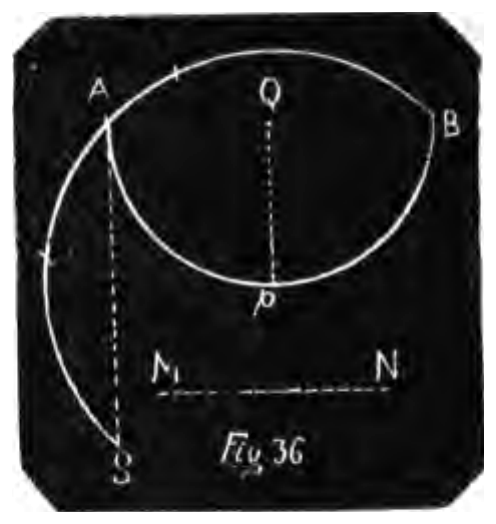

§§ 86–92: Terza proporzionale e casi di raddoppiamento iterativo¶
LIBRO QUINTO
DELLE DISTANZE PROPORZIONALI
86. Prob. Trovare una terza proporzionale alle due distanze \(Qp, MN\) (fig. 35), delle quali la prima \(Qp\) è maggiore della seconda \(MN\).

Sol. Col centro \(Q\), e col raggio \(Qp\) si descriva un arco indefinito \(ApB\). Col centro \(p\), e col raggio \(MN\) si descriva la semicirconferenza \(BAS\). Sarà \(AS\) la terza proporzionale.
Dim. Pel Lemma del § 22 sarà \(AS \cdot pQ = (Ap)^2\). Dunque \(AS \cdot pQ = (MN)^2\). Quindi (17, lib. VI) \(pQ : MN :: MN : AS\).
87. Trovare una terza proporzionale alle due distanze \(Qp, MN\) (fig. 36), delle quali la prima è minore della seconda, ma però maggiore della metà di quella.
Avv. Ci accorgeremo, che la \(Qp\) sia maggiore della metà della \(MN\), se i due circoli descritti coi centri \(Q\) e \(p\), che sono gli estremi della prima distanza, e coi raggi \(Qp\) ed \(MN\), che sono le due distanze date, si taglino tra loro come nella figura.
f. 0072 · p. 47Sol. È la stessa, che la precedente applicata alla fig. 36.


Dim. È la stessa, che la precedente.
88. Se il circolo \(pbQ'\) descritto col centro \(Q\), e col raggio \(Qp\) non si tagliasse in alcun punto col circolo descritto col centro \(p\), e col raggio \(MN\), come nella fig. 37; servirà il problema seguente.
89. Prob. Trovare una terza proporzionale alle due distanze (fig. 37) \(Qp, MN\), delle quali la prima è minore della metà della seconda.

Sol. Col centro \(p\), raggio \(MN\) si descriva un arco indefinito \(BAS\). Col centro \(Q\), raggio \(Qp\) si descriva la semicirconferenza \(pbQ'\) (§ 64). Col centro \(Q'\), raggio \(Q'p\) si descriva un arco indefinito. Se quest’arco taglia l’arco \(BAS\) in due punti \(B\) ed \(A\); si determini la semicirconferenza \(BAS'\) (§ 64). Col metodo dello stesso § 64 alla \(AS'\) si aggiunga in linea retta un’eguale \(S'S\). Sarà \(AS\) la terza proporzionale cercata.
Dim. Si ha (§ 22) \(AS' \cdot pQ' = (Ap)^2 = (MN)^2\). Ma \(pQ' = 2pQ\). Dunque \(2AS' \cdot pQ = (MN)^2\); ossia \(AS \cdot pQ = (MN)^2\). Quindi (17, lib. I) \(pQ : MN :: MN : AS\).

90. Se nemmeno l’arco \(pcQ''\) descritto col centro \(Q'\) (fig. 38), e col raggio \(Q'p\) tagliasse l’arco \(BAS\) descritto col centro \(p\), e col raggio \(MN\); si determini la semicirconferenza \(pcQ''\); col centro \(Q''\), e col raggio
f. 0073 · p. 48\(Q''p\) si descriva un arco indefinito. Se questo taglia l’arco \(BAS\) in due punti \(A\) e \(B\); si determini la semicirconferenza \(BAS''\) (§ 64). Si quadruplichi \(AS''\) (§ 65), e sia \(AS = 4AS''\). Sarà questa la terza proporzionale cercata.
Dim. Poichè si ha (§ 22) \(AS' \cdot pQ'' = (Ap)^2 = (MN)^2\). Quindi \(4AS' \cdot pQ = (MN)^2 = AS \cdot pQ\). Quindi (17, lib. VI) \(pQ : MN :: MN : AS\).
91. Nella stessa guisa si procederebbe oltre, se nemmeno la distanza \(Q''p\) fosse maggiore della metà della \(MN\); cioè si prenderebbe una distanza dupla di essa, e ottupla di \(Qp\), e si ottuplicherebbe la \(AS''\), che ne venisse determinata. Questa distanza ottupla della \(AS'\) sarebbe la terza proporzionale cercata; e così via via.
La dimostrazione è come le precedenti.
92. Anche nel caso che la prima distanza \(Qp\) fosse bensì maggiore della metà della seconda \(MN\), ma di poco, gioverà duplicarla, perchè le intersezioni de’ due cerchj si facciano ad angoli non tanto acuti, ma più vicini al retto (§ 9).